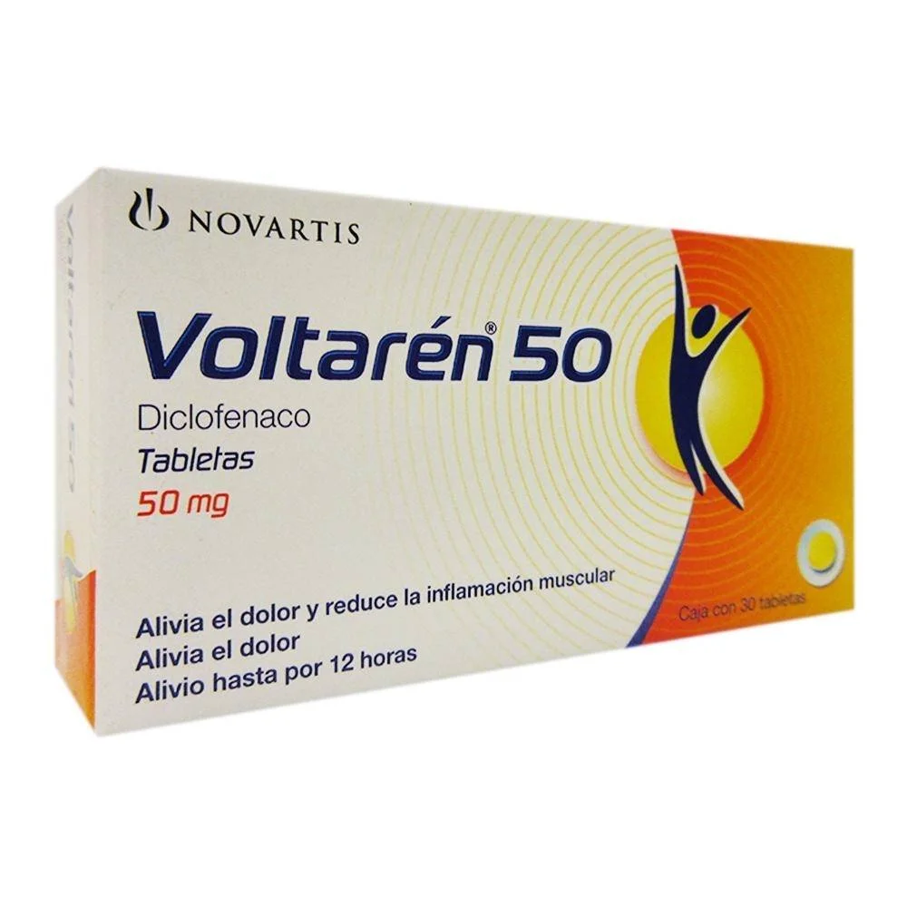

Inhibe de forma no selectiva las enzimas COX-1 y COX-2, reduciendo la síntesis de prostaglandinas, responsables del dolor, fiebre e inflamación.
Vía Oral, parenteral (IM/IV), gel tópico, supositorio
Evinacumab (Evkeeza®):